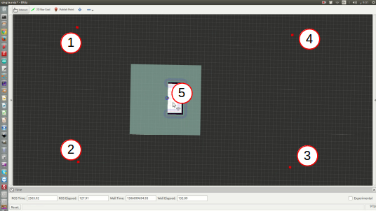

The eco-bot is a trash collecting robot. Once given the location of trash, it goes to the location and collects all the trash(disappears from the screen).

The ecobot first needs to generate a map of the area, which is done by using GMapping and RRT Exploration package. The RRT Exploration Package uses the Rapidly-Exploring Random Tree (RRT) path planning algorithm. A LiDAR is used for GMapping instead of a Laser, which enables to generate map very quickly. Image above represents RRT exploration and gmapping of the environment.
Once the map is generated, it is stored as a pgm image file(like the picture above). The generated pgm file is used later during the trash collection. The ecobot is assumed to be connected to internet, from where it receives the trash location. The robot then navigates to the trash location, using A* Algorithm. After the robot reaches near the trash, it collects the trash and thus completes its task.
Dependencies: Ubuntu 16.04, ROS Kinetic, Turtlebot stack, GMapping, amcl, Navigation stack
This is a ROS package developed for final project in Software Development for Robotics course. It demonstrates the functionality of an autonomous AGV in a simulated environment. The package has passed both gtest and rostest designed for extreme cases. With a successful build in Travis, it has a 94% coverage on Coveralls. The project can be accessed from here : GitHub Repo
Below video shows a brief video tutorial on how to run the package -